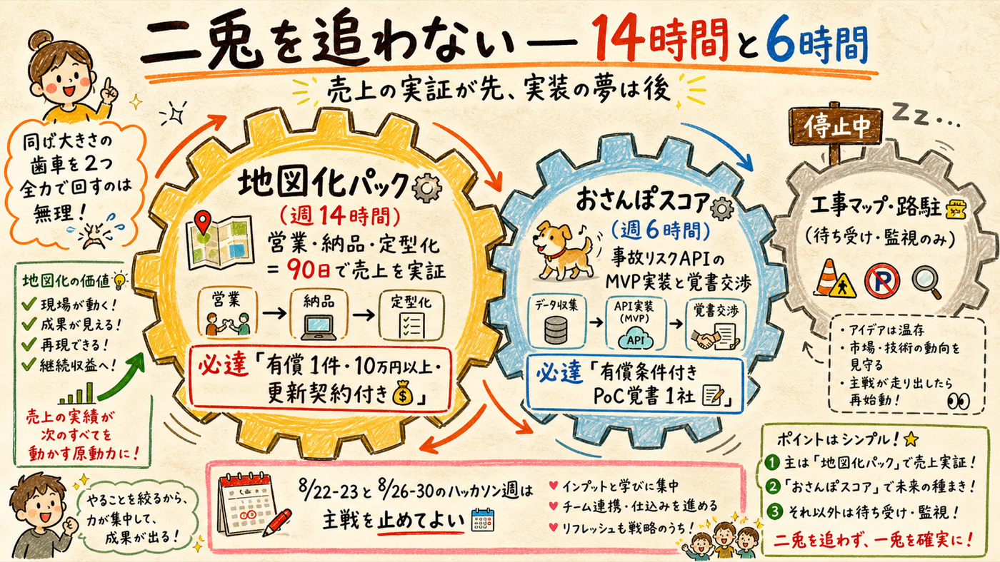
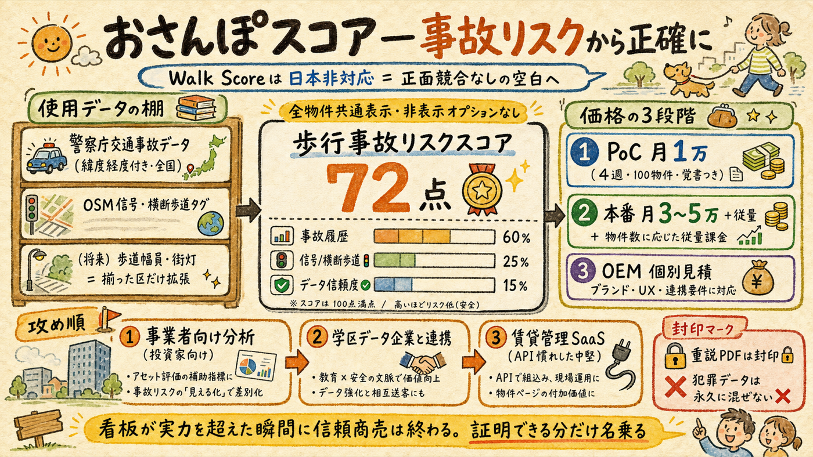
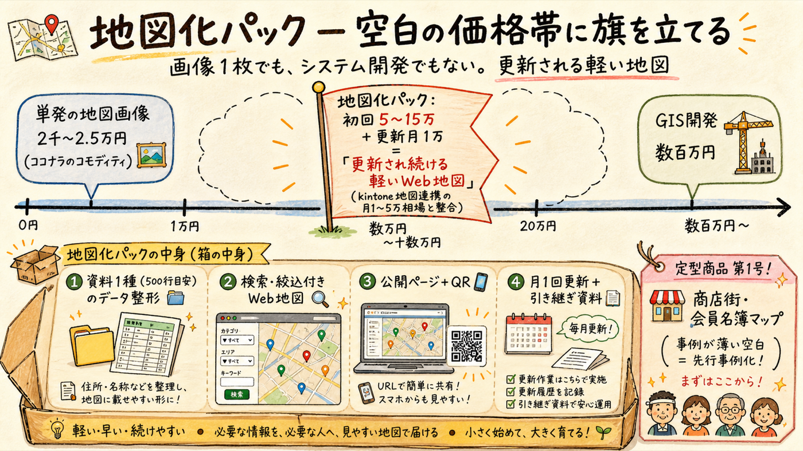
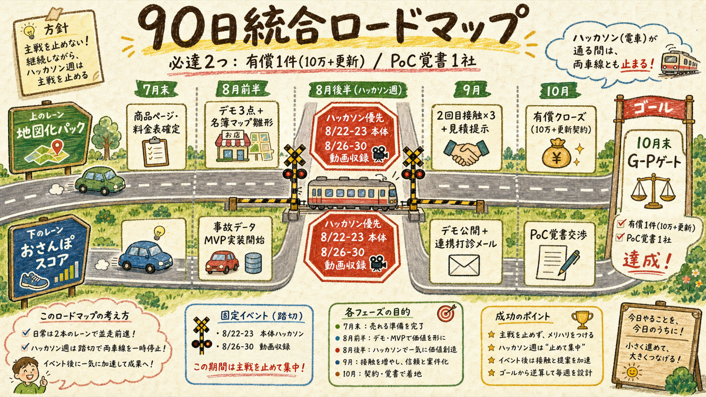

01 結論 — 配分と必達二本柱は同格ではない。90日は地図化が主、スコアは覚書まで

二本柱は同格ではない。90日は地図化が主、スコアは覚書まで
週20時間の中の主戦partは、地図化パック14時間（営業・納品・定型化）＋おさんぽスコア6時間（MVP実装と覚書交渉）。理由はcodexの指摘どおり「実装重と営業重の同時主戦は非現実的」で、金の実証が先。ハッカソン日程（8/22-23本体・8/26-30動画収録）とは別枠で、その週は主戦を一時停止してよい。
レーン 90日の必達 撤退・継続基準
地図化パック(主・週14h) 有償顧客1件・10万円以上・更新契約付き 達成でG-P通過候補、未達なら商品定義を再設計（接触モデルは維持） おさんぽスコア(従・週6h) 実データを持つ買い手1社と有償条件付きPoC覚書に合意 覚書ゼロなら2027年3月凍結基準を前倒し検討 工事マップ・路駐(待ち受け) なし（分岐シグナル監視のみ） 変更なし
正直な現在地（2026-07-11追記）: 両レーンとも「価格の相場」と「競合の不在」までが検証済みで、「誰かが実際に払った証拠」はまだゼロ 。競合不在は需要の証明ではない。だから90日の必達は売上の拡大ではなく「1件売れるか／覚書1つ取れるか」の答え合わせであり、10月末のG-Pゲートはその結果で判定する。
02 おさんぽスコア 商品仕様v2MVPは「事故リスク」と正確に名乗る。フルスコア化はデータが揃った区から

MVPは「事故リスク」と正確に名乗る。フルスコア化はデータが揃った区から
Walk Scoreが日本非対応と確定した空白に、正面から入る。ただしcodexの過大表示警告を全面採用し、MVPの名乗りは「歩行事故リスクスコア」— 使うデータ（警察庁交通事故オープンデータ2019-2024・緯度経度付き＋OSMの信号・横断歩道タグ、50mメッシュ）で証明できる範囲だけを言う。歩道幅員・街灯は整備区から順次追加し、揃った区だけ「歩行環境スコア」へ拡張表示する。
表示ルール（信頼の設計） : 全物件共通で「総合点＋内訳（事故・信号等）＋データ信頼度」を表示。閾値以下の非表示オプションは作らない（恣意的選別は商品の信頼を壊す—codex判定）価格3層 : PoC=月1万円・4週間・対象100物件限定、開始前に有償価格・決裁者・評価指標（掲載率/利用率/問い合わせ増減）・転換判定日を覚書で合意 → 本番=月3〜5万円＋物件数/API量の従量 → OEM=個別見積買い手の攻め順 : ①事業者向け分析ツール系（ヤモリ=投資家向け地域分析・国交省採択）— 消費者向けバッジと違い低スコア忌避が起きない ②ガッコム（学区データ・安全ナビ運営）— 連携提案 ③中堅賃貸管理SaaS・API事業者（いえらぶGROUP・日本情報クリエイト・ITANDI・いい生活・GMO賃貸DX・ミカタ・アットホーム(パーツ提供)・Geolonia=API組込みに慣れた層。不動産テック協会経由の一括アプローチも）— ①②と合わせ実名10社封印事項 : 重説補助PDFは責任境界（免責・現地優先）を設計するまで出さない。犯罪データは永久に混ぜない（既定）
命名の規律: ブランド名「おさんぽスコア」は維持するが、営業・表示上はβ期間中「歩行事故リスク」と名乗る。看板が実力を超えた瞬間に信頼商売は終わる — 工事お知らせAIの誤情報ガードレールと同じ思想。
03 地図化パック 商品仕様v2「単発画像2.5万円」と「開発数百万円」の間の空白＝更新され続ける軽いWeb地図

「単発画像2.5万円」と「開発数百万円」の間の空白＝更新され続ける軽いWeb地図
調査で価格ポジションが確定した。単発の地図画像はココナラで2千〜2.5万円のコモディティ、業務地図SaaSはkintone連携で月1〜5万円、自治体の観光マップ受託は250〜600万円。初回5〜15万円＋更新月1万円は「kintone相場の月額下限と整合」する妥当な設定（codexも価格自体は妥当と判定）。
パック内容の明文化 : 資料1種（目安500行相当まで）のデータ整形＋検索・絞り込み付きWeb地図＋公開ページ＋QR＋スマホ対応。更新プラン月1万円=月1回の更新＋ホスティング＋引き継ぎ資料定型商品第1号は「商店街・会員組織の名簿マップ」 : 調査で事例が薄い＝先行事例化できる空白。防災（社協・町会）・空き家がそれに続くココナラの扱い（codex判定を採用） : 「Web地図一式」の汎用出品はしない（価格競争に巻き込まれる）。出品するなら「商店街名簿→更新・引き継ぎ・QR公開込みの定型商品」1本のみ自治体筋 : 観光マップ元請け（250〜600万・法人向け）は狙わず、既存プロポーザル案件の「データ整備パート」下請けと、ビジネスチャンス・ナビの小型案件[要ログイン確認]を拾う売り先の顔と財布（2026-07-11追加・一次確認） : 最初の1件は大田区の商店会。大田区商店街連合会（おーたふる・加盟100超・蒲田PiO 5階・03-3731-8500）経由か、乗務で知っている商店街へ直接。財布は大田区「商店街戦略的PR事業費補助金」＝補助率4/5・媒体制作16万円上限・WEB広報32万円上限・申請期間は2027年1月8日まで走行中 で、外部人材への外注が制度上想定されている。提案の一枚: 「10万円のWeb地図が実質負担2万円。補助金の申請書類も用意します」— 話術ではなく補助金の算数で決まる商談にする。セカンドは町会・自治会の防災マップ（都要領で補助率10/10・上限30万円の例）3回接触モデルとの接続 : 1回目=工事マップ実物を見せる → 2回目=相手の公開資料でミニ地図（60分・AIが下ごしらえ） → 3回目=このパック料金表を出す
04 codex協議の原文要旨耳が痛い順。これを通ったものだけを採用した
判定1 — 配分と価格 二兎は追わず、90日は地図化で売上実証、スコアは「事故リスクAPI」に絞って検証すべき。月1万円はPoC入口なら妥当、本番のサイト定額は安すぎる。月3〜5万円＋物件数/API量の従量、OEMは個別見積りが妥当。PoCは4週間・対象100物件等に限定し、開始前に有償価格、決裁者、評価指標（掲載率・利用率・問い合わせ増減）、転換判定日を合意せよ。
判定2 — 信頼の設計 閾値以下の非表示は恣意的な選別になり、商品への信頼を壊すので悪手。全物件共通ルールで「総合点＋事故・信号等の内訳＋データ信頼度」を表示すべき。低評価忌避が強いなら、消費者向けバッジではなく事業者向けリスク確認・安全経路提案・改善説明ツールへ転換する方が商流に合う。事故＋OSMだけで「歩行安全」を断定し歩道・街灯を仕様に掲げるのは過大表示。重説補助PDFも責任境界を明示するまで封印が妥当。
判定3 — 集客と必達 ココナラは悪手寄り。定型商品としてのみ出品。週20時間で実装重と営業重の同時主戦は非現実的—地図化14時間、スコア6時間で受注・顧客理解を先行。90日必達: 地図化=有償顧客1件・10万円以上・更新契約付き／スコア=実データを持つ買い手1社が有償条件付きPoC覚書に合意。
05 90日統合ロードマップハッカソン週は主戦を止めてよい。二重稼働を設計に織り込む

ハッカソン週は主戦を止めてよい。二重稼働を設計に織り込む
週 地図化パック(週14h) おさんぽスコア(週6h) 固定イベント
7月残り 商品ページ・料金表1枚の確定（AI） — Slack案内待ち 8月前半 デモ3点整理・名簿マップ定型商品の雛形 警察庁事故データ+OSMでMVP実装開始（AI主導） ナビ登録・Code for Japan参加・GovTech東京パートナーズ登録 8月後半 —（ハッカソン優先で一時停止） —（同） 8/22-23ハッカソン本体・8/26-30動画収録 9月 2回目接触×3件（ミニ地図）・見積提示 都内デモ公開・ヤモリ/ガッコムへ連携打診メール PLATEAU AWARDエントリー判断 10月 3回目接触→有償試行クローズ（10万円以上+更新契約） PoC覚書交渉（価格・指標・判定日を文面で） 月末G-Pゲート判定
ガードレール: ①主戦合計は週20h以内・ハッカソン週はゼロでよい ②スコアの営業文言は「事故リスク」から逸脱しない（HARNESS.md変更禁止6の数字規律と同様に扱う） ③地図化の値引きは初回のみ・5万円を下回る案件は受けない（コモディティ回避） ④どちらも達成できない場合はG-Pゲートで「接触モデルは維持・商品を再設計」
結論
サービス内容が確定した: おさんぽスコアは「歩行事故リスクスコア」として正確に名乗るMVP（全物件共通表示・PoC月1万→本番月3〜5万＋従量）、地図化パックは「更新され続ける軽いWeb地図」（初回5〜15万＋月1万・第1号定型は商店街名簿マップ）。
展開戦略は非対称配分: 地図化14h/スコア6h。売上の実証が先、実装の夢は後。ハッカソン週は主戦を止める設計まで含めて現実に合わせた。
90日の必達は2つだけ: 地図化=有償1件（10万円以上・更新契約付き）、スコア=有償条件付きPoC覚書1社。この2つがG-Pゲート（10月末）の判定材料になる。
主戦2レーン確定版（2026-07-11・ultracode協議: 並列調査3本×codex gpt-5.6-sol×統合）/ 出典: walkscore.com・警察庁オープンデータ・各社公式・ココナラ/ランサーズ実勢・kintone連携価格 ほか（詳細は調査ログ）/ [推定][未確認]ラベルは本文中に明記